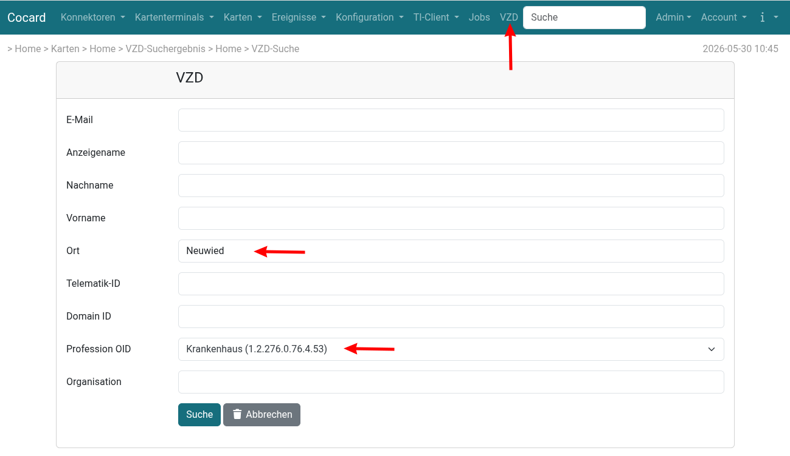
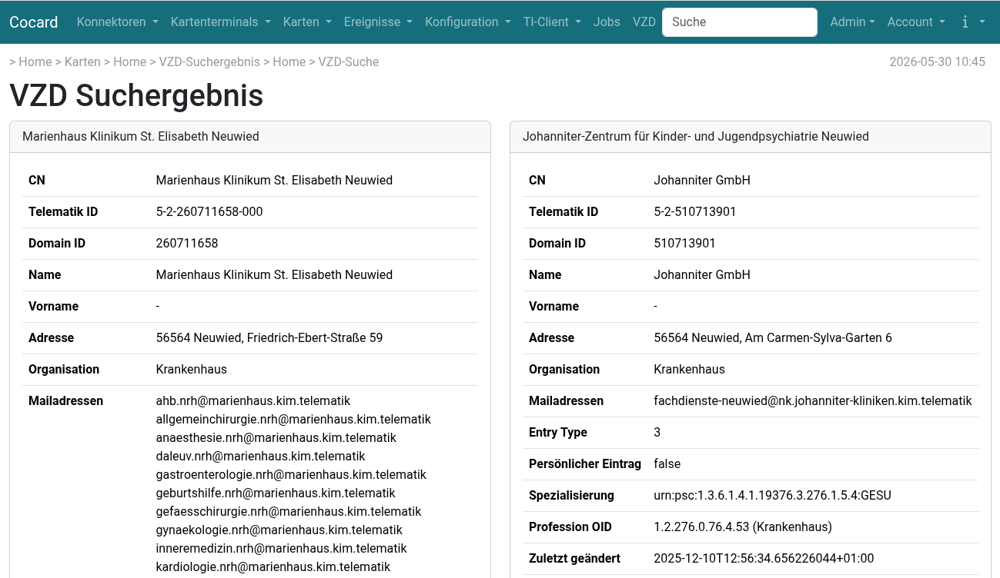

Verzeichnisdienst (VZD)
Der Verzeichnisdienst VZD ist das Adressbuch der Telematik und enthält die wesentlichen Informationen zu Organisationen und Personen, für die ein Zertifikat ausgestellt wurde - einschließlich dem Zertifikat selbst (HBA und SMB-C). Wenn über eine Telematik-ID mehrere SMC-Bs ausgestellt wurden, werden diese unter ein und demselben Verzeichniseintrag zusammengefasst.
Der Verzeichnisdienst basiert auf LDAP, kann also prinzipell von jedem LDAP-fähigem Adressbuch abgefragt werden (z.B. via Thunderbird). Die primäre Anwendung des VZD ist die Adressensuche für KIM.
Idealerweise führt man die VZD-Suche direkt in seinem KIM-Client durch. Wenn dort die Such- und Auswahlmöglichkeiten aber zu keinen Treffer führen, hilft gegebenfalls Cocard weiter. Ein Beispiel: will man Dr. Mustermann in einer Gemeinschaftspraxis eine KIM-Nachricht senden, hilft die Suche nach Mustermann oft nicht weiter. Viele LDAP-Clients führen nur eine Suche nach Mustermann* aus. Wenn jetzt der Anzeigename im Verzeichnis aber Dres. Musterfrau & Mustermann lautet, bleibt die Suche erfolglos.
Cocard dagegen durchsucht das gewählte Textfeld immer mit *suchtext* (Ausnahme: Profession OID).
Suche
Die Suche im VZD erreicht man über den Eintrag VZD in der Menüzeile. Im folgenden Beispiel wird nach Krankenhäusern in Neuwied gesucht:

| Liefert die Suche zu viele Ergebnisse, gibt der Verzeichnisdienst nichts aus. Eine leere Trefferliste kann also auch eine viel zu grobe Suche mit zu vielen möglichen Treffern als Ursache haben. |
| Bewährt hat sich die zusätzliche Angabe des Ortes bei jeder Suche. Je nach Suche genügt das aber manchmal nicht: Ort + Betriebsstätte Arzt liefert bereits in mittelgroßen Städten zu viele mögliche Treffer und die Ergebnisliste bleibt leer. |
